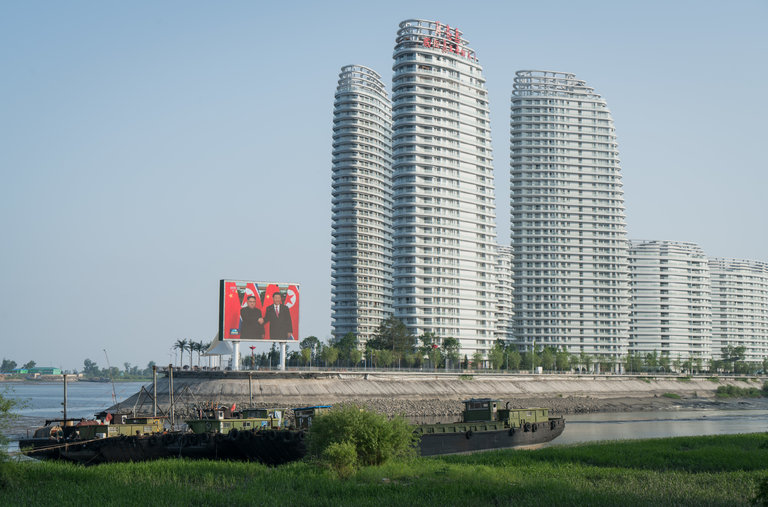

World
-
SZILARD KOSZTICSAK/EPA, VIA SHUTTERSTOCK Safe in Hungary, Viktor Orban Pushes His Message Across Europe
Allies of Mr. Orban, Hungary’s far-right leader, are buying media outlets across Central and Eastern Europe, extending his influence.
-
 CREDITYAN CONG FOR THE NEW YORK TIMES China’s Trade With North Korea Is Set to Soar With a Trump-Kim Deal
A shadowy gray market of “shuttle traders” and money couriers already exists, and economic ties could quickly take off if sanctions are lifted.
-

Guatemala Volcano’s Death Toll, Now at 65, Is Likely to Rise
Emergency workers were searching through layers of ash for survivors after the eruption of the volcano less than 30 miles from the capital.
-

U.S. and Turkey Agree on Kurds’ Withdrawal From Syrian Town
Turkey objected to the presence of U.S.-backed Kurdish fighters in the city of Manbij. Turkey threatened to invade the city in January.
-
U.S. Army Veteran Tried to Spy for China, Officials Say
-
Mexican Court Orders New Inquiry Into Disappearance of 43 Students
-
Mexican Court Orders New Inquiry Into Disappearance of 43 Students
-

Jordan’s Prime Minister Quits as Protesters Demand an End to Austerity
-
Alexis Kohler, Aide to Emmanuel Macron, Is Accused of Corruption